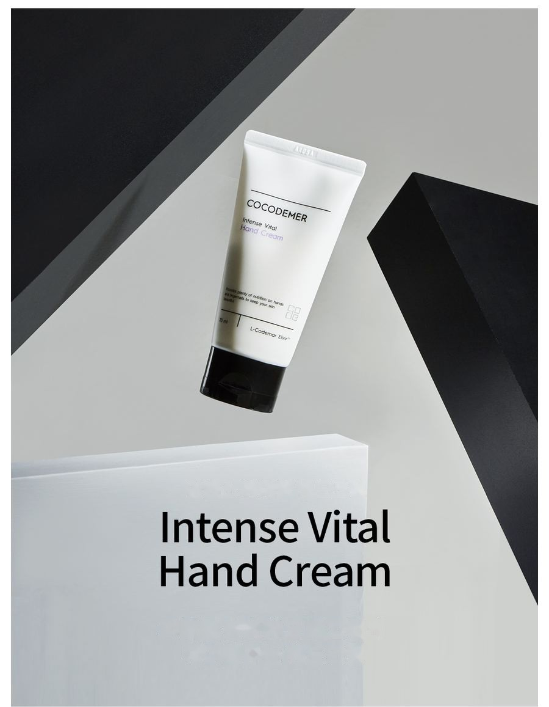
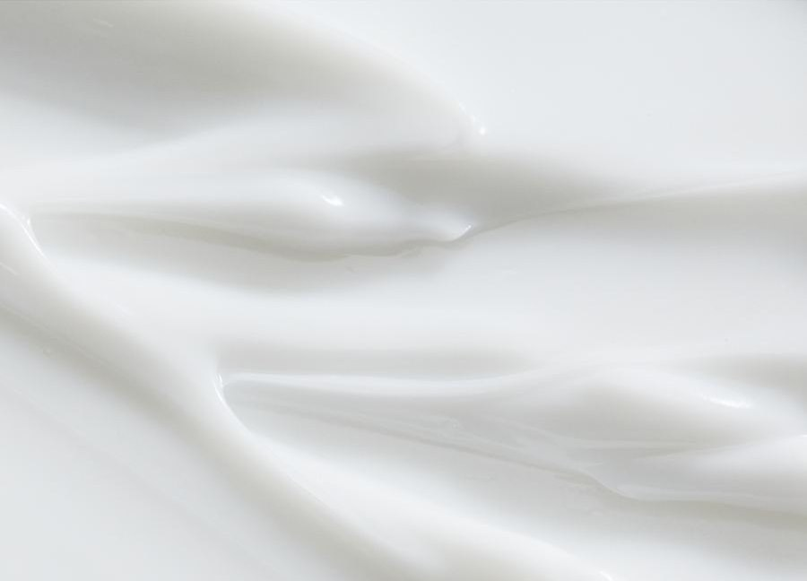

COCODEMER Intense Vital Hand Cream
| ปริมาณ | 70ml |
|---|---|
| เหมาะสำหรับ | ทุกสภาพผิว |
| เทคโนโลยีหลัก | L-CODEMAR ELIXIR™ |
| ผู้ผลิต · ผู้รับผิดชอบการจำหน่าย | JUNGCOS CO., LTD. / COCODEMER CO., LTD. |
ผลิตภัณฑ์นี้พัฒนาขึ้นเป็นส่วนหนึ่งของกลุ่มเครื่องสำอางแบบสั่งทำเฉพาะของเรา ขณะนี้ไม่มีจำหน่าย สำหรับการสอบถามเรื่องการผลิตซ้ำหรือการปรับปรุงใหม่ กรุณาติดต่อเราผ่านการสอบถาม B2B

ครีมทามือที่ช่วยให้ผิวชุ่มชื้นและเรียบเนียน
ครีมทามือสัมผัสเนียนนุ่มดุจแพรไหม ให้ความชุ่มชื้นพร้อมสัมผัสสดชื่น
ช่วยปกป้องผิวจากฝุ่นละอองขนาดเล็กและปัจจัยที่เป็นอันตราย คงความสวยงามและความเปล่งปลั่งของมือ
Ceramide NP ซึ่งมีโครงสร้างใกล้เคียงกับส่วนประกอบของเกราะป้องกันผิวตามธรรมชาติ ช่วยจัดเรียงโครงสร้างเซลล์ของเกราะป้องกันผิวที่เสื่อมสภาพ และปรับปรุงกระบวนการเสริมความแข็งแรงของเกราะป้องกันผิว
ม่านความชุ่มชื้นที่ก่อตัวจากส่วนผสมให้ความชุ่มชื้นหลากหลายชนิด ช่วยลดการสูญเสียน้ำให้น้อยที่สุดและคงความชุ่มชื้นได้ยาวนานขึ้น

สารให้ความชุ่มชื้นจากพืช (Salvia Officinalis (Sage) Leaf Extract, Rosmarinus Officinalis (Rosemary) Leaf Extract และอื่นๆ) และน้ำมันที่ช่วยให้ผิวนุ่ม (Carthamus Tinctorius (Safflower) Seed Oil, Oenothera Biennis (Evening Primrose) Oil, Olea Europaea (Olive) Fruit Oil, Camellia Sinensis Seed Oil และอื่นๆ) ถูกทำให้เสถียรในอิมัลชันผลึกเหลวประจุบวก เพื่อม่านความชุ่มชื้นที่นุ่มนวล ไม่เหนียวเหนอะหนะ และแนบสนิทกับผิว
เทคโนโลยีเกราะป้องกันความชุ่มชื้นสร้างเกราะกำบังจากฝุ่นละอองขนาดเล็กและมลพิษในอากาศ ผิวได้รับความเปล่งปลั่งโดยไม่เหนียวเหนอะหนะ และสารบำรุงที่ช่วยให้ผิวเด้งเติมเต็มผิวจากภายใน เพื่อผิวที่เรียบเนียน
บนมือที่หยาบกร้าน ความชุ่มชื้นจะแตกตัวทันทีที่สัมผัส — สัมผัสแบบวอเตอร์บอมบ์ที่ให้ผิวแข็งแรงและชุ่มชื้น ไม่เหนียวเหนอะหนะ
* ข้อมูลข้างต้นใช้กับส่วนผสมเฉพาะชนิดนั้นเท่านั้น
รหัสสารออกฤทธิ์หลัก
- Bsเบสทำให้ผิวนุ่ม
- CnCeramide NPเสริมเกราะป้องกันผิว
- AoArgan Oilน้ำมันบำรุงจากธรรมชาติ
- SlSqualaneป้องกันความแห้งกร้าน
ไม่มีความหนักหรือความเหนียวเหนอะหนะแบบที่พบได้ทั่วไปในน้ำมันจากพืช ซึมซาบอย่างรวดเร็ว สร้างฟิล์มปกป้องที่ช่วยป้องกันความแห้งกร้าน ปกป้องผิวที่หยาบกร้านและบอบบาง และให้สัมผัสสดชื่น น้ำมันจากธรรมชาติยังช่วยปลอบประโลมผิว เร่งการเติมความชุ่มชื้น และคงความชุ่มชื้นไว้
Ceramide NP ซึ่งมีโครงสร้างใกล้เคียงกับส่วนประกอบของเกราะป้องกันผิวตามธรรมชาติ ช่วยเสริมความแข็งแรงให้เกราะป้องกันผิวที่เสื่อมสภาพ
* ข้อมูลข้างต้นเป็นคำอธิบายเกี่ยวกับส่วนผสม ไม่ใช่ผลิตภัณฑ์สำเร็จรูป
ดูข้อมูลส่วนผสม →
L-CODEMAR ELIXIR™
เทคโนโลยีเฉพาะของ COCODEMER
เทคโนโลยีห่อหุ้มด้วยอิมัลชันนาโนเจลหลายชั้นอันโดดเด่นของเรา ช่วยรวมสารออกฤทธิ์หลัก ได้แก่ น้ำมะพร้าว ไฟโตสเตอรอล กรดอะมิโน 20 ชนิด และสารสกัดจากน้ำผึ้ง ให้เป็นสารประกอบเชิงซ้อนที่เสถียร จากนั้นสารประกอบนี้ถูกพัฒนาเป็นรูปแบบไลโปโซมที่เป็นมิตรกับผิวและมีโครงสร้างคล้ายผิว เพื่อเพิ่มประสิทธิภาพการนำส่งสู่ผิวให้สูงสุด
L-Codemar Elixir™ ช่วยเสริมการยึดเกาะระหว่างเซลล์ผิว ฟื้นฟูเกราะป้องกันผิวที่เสียหาย และสร้างฟิล์มปกป้องที่แข็งแรง เพื่อให้ความชุ่มชื้นคงอยู่ยาวนานขึ้น

ข้อความในภาพด้านบน
L-CODEMAR ELIXIR™
- COCONUT WATER
- HONEY EXTRACT
- กรดอะมิโน 20 ชนิด
- PHYTOSTEROL

ข้อความในภาพด้านบน
- จุลินทรีย์ ฝุ่นละเอียด ฝุ่นเหลือง สารมลพิษ และมลพิษทางอากาศ
- การสูญเสียน้ำมากเกินไป
ผิวที่ถูกทำลาย
ไขมันระหว่างเซลล์ที่ถูกทำลายทำให้การยึดเกาะระหว่างเซลล์ผิวชั้นหนังกำพร้าอ่อนแอลง
- เพิ่มไขมันระหว่างเซลล์ ↑
- สารออกฤทธิ์
- ปกป้องจากความเครียดภายนอกและสารมลพิษ
- สูญเสียน้ำน้อยลง
ผิวที่แข็งแรง
ไขมันที่ได้รับการเติมเต็มช่วยฟื้นฟูโครงสร้างระหว่างเซลล์ → การยึดเกาะระหว่างเซลล์แข็งแรงขึ้น
วิธีใช้
หลังล้างมือ นำผลิตภัณฑ์ในปริมาณที่เหมาะสม ทาให้ทั่วผิวที่แห้งจนซึมซาบ
ครีมทามือสัมผัสเนียนนุ่มดุจแพรไหม ให้ความชุ่มชื้นพร้อมสัมผัสสดชื่น
ช่วยปกป้องผิวจากฝุ่นละอองขนาดเล็กและปัจจัยที่เป็นอันตราย คงความสวยงามและความเปล่งปลั่งของมือ
Ceramide NP ซึ่งมีโครงสร้างใกล้เคียงกับส่วนประกอบของเกราะป้องกันผิวตามธรรมชาติ ช่วยจัดเรียงโครงสร้างเซลล์ของเกราะป้องกันผิวที่เสื่อมสภาพ และปรับปรุงกระบวนการเสริมความแข็งแรงของเกราะป้องกันผิว
ม่านความชุ่มชื้นที่ก่อตัวจากส่วนผสมให้ความชุ่มชื้นหลากหลายชนิด ช่วยลดการสูญเสียน้ำให้น้อยที่สุดและคงความชุ่มชื้นได้ยาวนานขึ้น
สารให้ความชุ่มชื้นจากพืช (Salvia Officinalis (Sage) Leaf Extract, Rosmarinus Officinalis (Rosemary) Leaf Extract และอื่นๆ) และน้ำมันที่ช่วยให้ผิวนุ่ม (Carthamus Tinctorius (Safflower) Seed Oil, Oenothera Biennis (Evening Primrose) Oil, Olea Europaea (Olive) Fruit Oil, Camellia Sinensis Seed Oil และอื่นๆ) ถูกทำให้เสถียรในอิมัลชันผลึกเหลวประจุบวก เพื่อม่านความชุ่มชื้นที่นุ่มนวล ไม่เหนียวเหนอะหนะ และแนบสนิทกับผิว
เทคโนโลยีเกราะป้องกันความชุ่มชื้นสร้างเกราะกำบังจากฝุ่นละอองขนาดเล็กและมลพิษในอากาศ ผิวได้รับความเปล่งปลั่งโดยไม่เหนียวเหนอะหนะ และสารบำรุงที่ช่วยให้ผิวเด้งเติมเต็มผิวจากภายใน เพื่อผิวที่เรียบเนียน
บนมือที่หยาบกร้าน ความชุ่มชื้นจะแตกตัวทันทีที่สัมผัส — สัมผัสแบบวอเตอร์บอมบ์ที่ให้ผิวแข็งแรงและชุ่มชื้น ไม่เหนียวเหนอะหนะ
ไม่มีความหนักหรือความเหนียวเหนอะหนะแบบที่พบได้ทั่วไปในน้ำมันจากพืช ซึมซาบอย่างรวดเร็ว สร้างฟิล์มปกป้องที่ช่วยป้องกันความแห้งกร้าน ปกป้องผิวที่หยาบกร้านและบอบบาง และให้สัมผัสสดชื่น น้ำมันจากธรรมชาติยังช่วยปลอบประโลมผิว เร่งการเติมความชุ่มชื้น และคงความชุ่มชื้นไว้
Ceramide NP ซึ่งมีโครงสร้างใกล้เคียงกับส่วนประกอบของเกราะป้องกันผิวตามธรรมชาติ ช่วยเสริมความแข็งแรงให้เกราะป้องกันผิวที่เสื่อมสภาพ
* ข้อมูลข้างต้นเป็นคำอธิบายเกี่ยวกับส่วนผสม ไม่ใช่ผลิตภัณฑ์สำเร็จรูป
L-CODEMAR ELIXIR™
เทคโนโลยีเฉพาะของ COCODEMER เทคโนโลยีห่อหุ้มด้วยอิมัลชันนาโนเจลหลายชั้นอันโดดเด่นของเรา ช่วยรวมสารออกฤทธิ์หลัก ได้แก่ น้ำมะพร้าว ไฟโตสเตอรอล กรดอะมิโน 20 ชนิด และสารสกัดจากน้ำผึ้ง ให้เป็นสารประกอบเชิงซ้อนที่เสถียร จากนั้นสารประกอบนี้ถูกพัฒนาเป็นรูปแบบไลโปโซมที่เป็นมิตรกับผิวและมีโครงสร้างคล้ายผิว เพื่อเพิ่มประสิทธิภาพการนำส่งสู่ผิวให้สูงสุด L-Codemar Elixir™ ช่วยเสริมการยึดเกาะระหว่างเซลล์ผิว ฟื้นฟูเกราะป้องกันผิวที่เสียหาย และสร้างฟิล์มปกป้องที่แข็งแรง เพื่อให้ความชุ่มชื้นคงอยู่ยาวนานขึ้น
หลังล้างมือ นำผลิตภัณฑ์ในปริมาณที่เหมาะสม ทาให้ทั่วผิวที่แห้งจนซึมซาบ
| ปริมาณสุทธิ (ปริมาตรหรือน้ำหนัก) | 70ml |
|---|---|
| เหมาะสำหรับ | ทุกสภาพผิว |
| อายุการเก็บรักษา / ระยะเวลาใช้งานหลังเปิด | 30 เดือนนับจากวันที่ผลิต ใช้ภายใน 12 เดือนหลังเปิด |
| วิธีใช้ | หลังล้างมือ นำผลิตภัณฑ์ในปริมาณที่เหมาะสม ทาให้ทั่วมือที่แห้งจนซึมซาบ |
| ผู้ผลิตเครื่องสำอาง | JUNGCOS CO., LTD. |
| ผู้รับผิดชอบการจำหน่าย | COCODEMER CO., LTD. |
| ประเทศที่ผลิต | สาธารณรัฐเกาหลี |
| ส่วนประกอบทั้งหมด (INCI) | Cocos Nucifera (Coconut) Water, Glycerin, Distearyldimonium Chloride, Hydrogenated Poly(C6-14 Olefin), Cetyl Alcohol, Butylene Glycol, 1,2-Hexanediol, Ricinus Communis (Castor) Seed Oil, Dimethicone, Water, Honey Extract, Argania Spinosa Kernel Oil, Camellia Sinensis Seed Oil, Carthamus Tinctorius (Safflower) Seed Oil, Cocos Nucifera (Coconut) Oil, Glycine Soja (Soybean) Oil, Helianthus Annuus (Sunflower) Seed Oil, Limnanthes Alba (Meadowfoam) Seed Oil, Oenothera Biennis (Evening Primrose) Oil, Olea Europaea (Olive) Fruit Oil, Prunus Amygdalus Dulcis (Sweet Almond) Oil, Alanine, Arginine, Aspartic Acid, Carnitine, Ceramide NP, Cetearyl Alcohol, Cetyl Ethylhexanoate, Citrulline, Ethylhexylglycerin, Glutamic Acid, Glutamine, Glycine, Hydrogenated Phosphatidylcholine, Isoleucine, Leucine, Methionine, Myristic Acid, Neopentyl Glycol Diheptanoate, Ornithine, Palmitic Acid, Phenylalanine, Phytosterols, Polyglyceryl-10 Myristate, Polyglyceryl-2 Stearate, Polyquaternium-51, Proline, Serine, Sodium Chloride, Squalane, Stearic Acid, Threonine, Tromethamine, Tryptophan, Tyrosine, Valine, Fragrance (Parfum) |
| การอนุมัติเป็นเครื่องสำอางเชิงฟังก์ชัน | ไม่เกี่ยวข้อง |
| คำเตือน | 1. หากเกิดอาการผิดปกติ เช่น ผื่นแดง บวม หรือคัน บริเวณที่ใช้ ระหว่างหรือหลังการใช้ หรือหลังสัมผัสแสงแดดโดยตรง ควรปรึกษาแพทย์ผู้เชี่ยวชาญ 2. หลีกเลี่ยงการใช้บริเวณผิวที่มีบาดแผลหรือถลอก 3. การเก็บรักษาและการใช้งาน ก) เก็บให้พ้นมือเด็ก ข) เก็บให้พ้นจากแสงแดดโดยตรง |
| การรับประกันคุณภาพ | หากผลิตภัณฑ์มีข้อบกพร่อง การชดเชยจะเป็นไปตามหลักเกณฑ์การระงับข้อพิพาทของผู้บริโภคที่ประกาศโดยคณะกรรมการการค้าที่เป็นธรรมแห่งเกาหลี |
| ฝ่ายบริการลูกค้า | 010-3307-9341 / cocodemer@cocodemer.co.kr |
* ข้อมูลที่ต้องแสดงตามกฎการแสดงฉลากและการโฆษณาเครื่องสำอางของเกาหลี ข้อความนี้เป็นคำแปลเพื่อใช้อ้างอิง สำหรับรายการส่วนประกอบที่รับรองแล้ว CPSR หรือ CoA กรุณาติดต่อเราผ่านการสอบถาม B2B